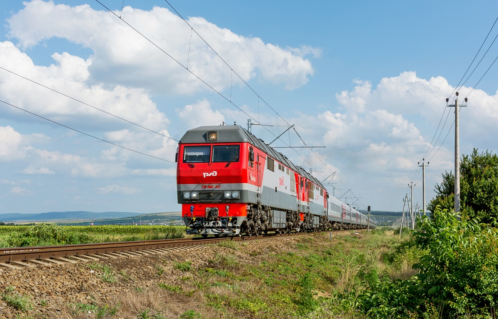

Пассажирский тепловоз — Коломенский завод
ТЭП70БС — магистральный пассажирский шестиосный тепловоз с электрической передачей переменно-постоянного тока, созданный на базе тепловоза ТЭП70 и выпускаемый Коломенским заводом с 2006 года (первые образцы — 2002 года). Аббревиатура расшифровывается как «тепловоз с электропередачей, пассажирский, тип 70, Брянский/серийный» — это глубокая модернизация ТЭП70 с новой кабиной, микропроцессорной системой управления и улучшенной экипажной частью. Дизель 2А-5Д49 (16ЧН26/26) развивает мощность 2942 кВт (4000 л.с.), а конструкционная скорость достигает 160 км/ч (существует также исполнение с тяговыми редукторами на 120 км/ч для сложных участков). Тепловоз водит пассажирские поезда на неэлектрифицированных линиях России, Беларуси, Литвы, Туркменистана и Узбекистана.